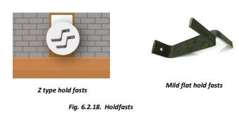

Fixing Doors and Window Frames

● Door and window frames are fixed in the walls during masonry work. Steel holdfasts are fixed to the frames which are embedded in the walls with cement concrete. The middle holdfast of the door frame is fixed into the RCC Sill band.
● Window frames have holdfasts fixed to all four sides. The holdfasts fixed to the vertical members are fixed to the walls and the top and bottom holdfasts are fixed to the RCC Lintel and Sill bands.
● For earthquake safety, make strong door and window frames of steel T-sections. Weld steel grills to the window frames.
● The door/window openings should be small and must be at least 60 cm away from wall corners for earthquake safety.
● Two openings in a wall should be separated by at least 60 cm of masonry.
● All masonry walls should be bound together by 75 mm thick RCC bands at plinth, lintel, and roof levels.
● Provide vertical bars or RCC tie columns at masonry wall corners as per design.
● Once the RCC plinth band is cast, a strong door frame of steel T-section should be fixed to it.
● Position the door frames over the plinth at their exact locations. Ensure the sides of the frame are in plumb. Check multiple times as the masonry goes up. Use shims if necessary to adjust the frame for level and plumb.
● Secure the door frames to the surrounding structure using holdfasts welded to the frames. These holdfasts should be placed as follows:
i) One pair (one on each side) fixed 300mm above the plinth band,
ii) Middle pair fixed into the sill RCC band,
iii) One pair fixed 300mm below the lintel band,
iv) One pair welded at the top, fixed into the RCC Lintel band.
● The holdfasts are fixed into the masonry or RCC bands as the masonry goes up. Frames fixed later become loose and do not provide safety against earthquakes.
● The holdfasts of window frames are also fixed in walls as the masonry goes up.
i) The bottom pair is fixed into the RCC sill band.
ii) The holdfasts fixed to the vertical sides of the frame are fixed into the masonry of walls as the masonry work progresses with cement concrete.
iii) The top pair is fixed into the RCC lintel band.

Step 7: Window Frame Fixing
● Once masonry reaches the window sill level, place window frames on the wall. Also, place steel bars of the sill band exactly as we did for the RCC plinth band.
● The middle holdfast of the door frame and the bottom holdfasts of the window frames are embedded into the RCC sill band.
● Continue masonry above the RCC sill band up to the lintel level.
● Create the RCC lintel band the same way as the RCC plinth band. The two holdfasts fixed to the top of the door and window frames shall be embedded in the lintel band.


Step 5: Casting of Bond Beam and Door Frame Fixing
● On the plinth, provide bond beams with 4 no of 12mm diameter bars (2 at top and 2 at bottom) and 8mm diameter stirrups @ 20 cm c/c. The main bars of the bond beams are bent 40 cm down into the tie columns to make a strong connection.
● All bond beams are filled with M20 cement concrete (1:1.5:3). All gaps around the tie columns are also filled with concrete.
● Once the bond beams are completed, the house is now ready up to the plinth level.
● Fill sandy soil in the plinth to make the working easier.
● Place all door frames in position on the RCC bond beam at the plinth level.
● Carry out 30 cm thick masonry in the superstructure using 30 x 15 x 15 cm size sundried blocks in cement mortar.
● Fix the lower ends of the door frames into the RCC bond beam with cement concrete. The door frames have three holdfasts fixed to it. The lower one is fixed into the wall masonry with cement concrete.